Major Cities and Towns
Itanagar
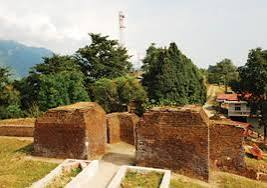
Itanagar Wildlife Sanctuary, Ganga Lake (Gyakar Sinyi), Ita Fort, Jawaharlal Nehru State Museum, Gompa Buddhist Temple
Tawang
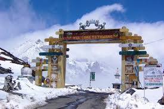
Tawang Monastery, Sela Pass, Tawang War Memorial, Nuranang Falls, Bum La Pass, Madhuri Lake (Sangestar Tso)
Ziro
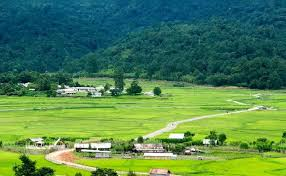
Ziro Valley, Talley Valley Wildlife Sanctuary, Meghna Cave Temple, Kile Pakho, Midey, Tarin Fish Farm
Bomdila
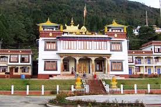
Bomdila Monastery, Bomdila View Point, Apple Orchards, Sessa Orchid Sanctuary
Pasighat
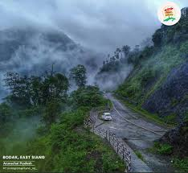
Daying Ering Wildlife Sanctuary, Pangin, Siang River, Kekar Monying
Along (Aalo)
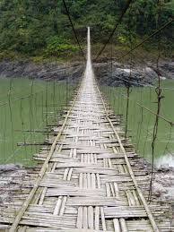
Mechuka Valley, Kamki Hydropower Dam, Patum Bridge, Donyi Polo Temple
Hill Stations and Scenic Spots
Sela Pass
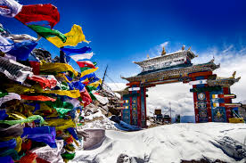
Sela Lake, Gateway to Tawang
Bomdila View Point
Scenic Views of the Himalayas
Pilgrimage Sites
Tawang Monastery
Largest Monastery in India, Important Buddhist Site
Malinithan
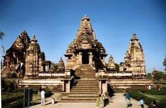
Ancient Hindu Temple, Archeological Significance
Cultural and Historical Sites
Ita Fort
Historical Fort in Itanagar, Archeological Significance
Jawaharlal Nehru State Museum
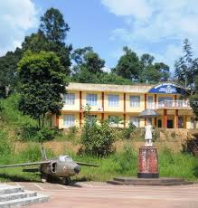
Historical and Cultural Museum in Itanagar
Natural Attractions
Ganga Lake (Gyakar Sinyi)
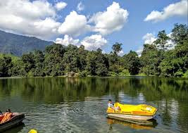
Beautiful Lake in Itanagar, Popular Picnic Spot
Pakhui Wildlife Sanctuary
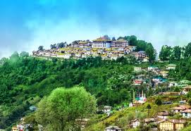
Rich in Flora and Fauna, Popular for Bird Watching
Wildlife Sanctuaries and National Parks
Namdapha National Park
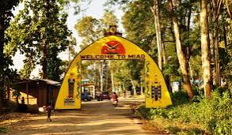
One of the Largest Protected Areas in India, Rich Biodiversity
Mouling National Park
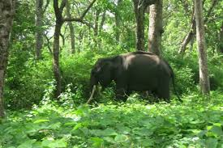
Home to Rare and Endangered Species, Dense Forests
Adventure and Trekking
Gorichen Peak
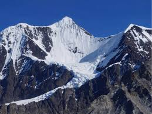
Highest Peak in Arunachal Pradesh, Popular Trekking Destination
Talley Valley
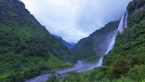
Picturesque Valley, Popular for Trekking and Nature Walks
Other Notable Attractions
Mechuka Valley
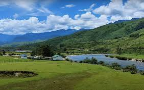
Beautiful Valley with Scenic Views, Adventure Activities
Ziro Valley
Known for Ziro Music Festival, Lush Greenery